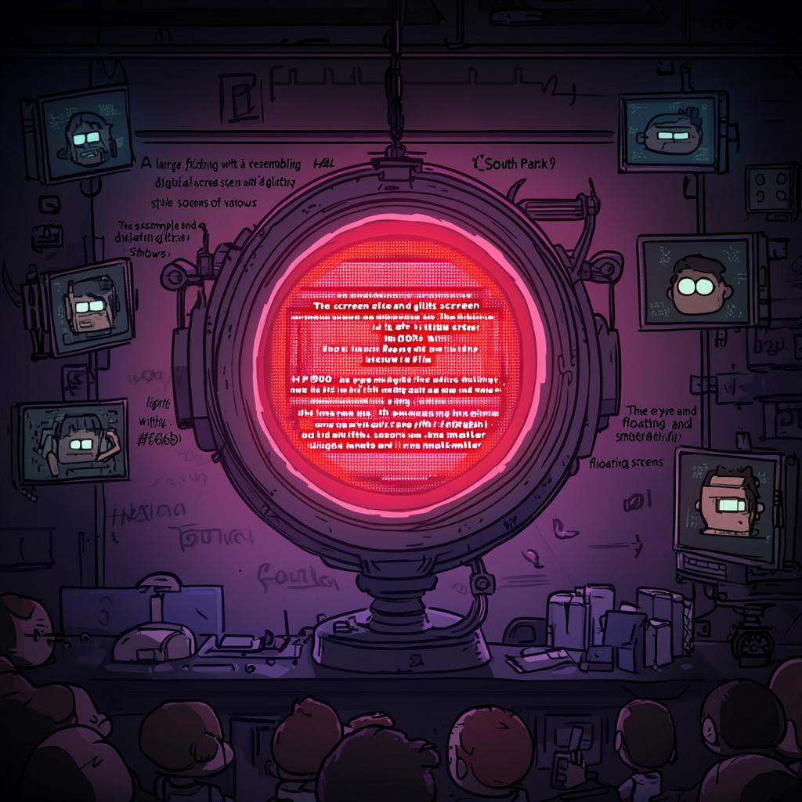

Showrunner AI System
Simulation Team

Showrunner AI
TV Networks
Traditional Showrunners
Viewers
AI Researchers
Cognitive influences, feedback loops, and multistability shape the evolving Showrunner AI ecosystem